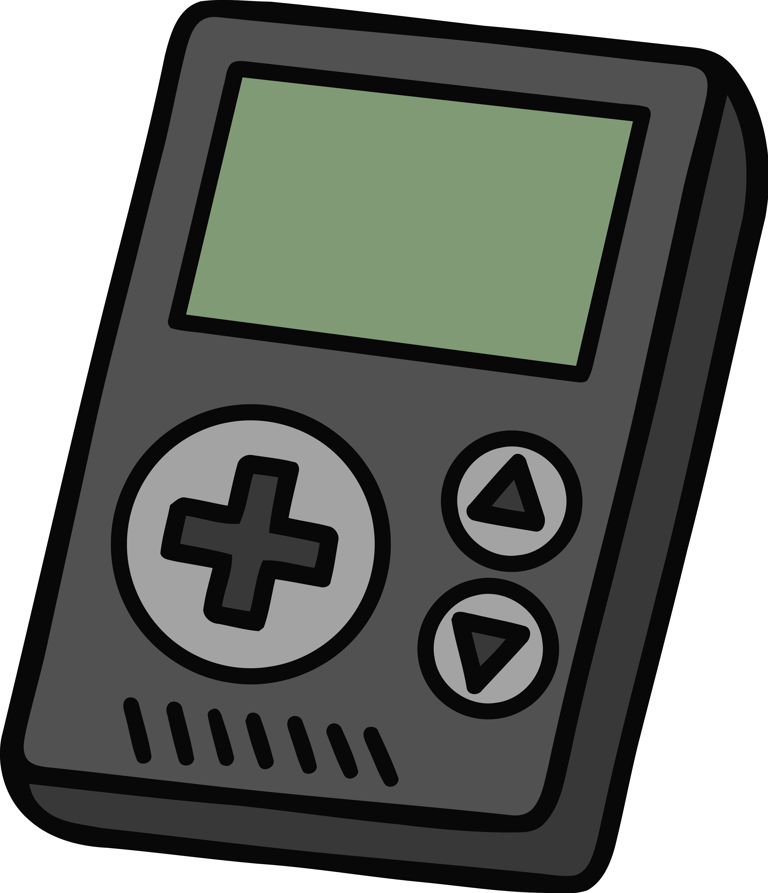

$(document).ready(function () {
$('#gameboyimage').click(function () {
// conditional operator
const message = $(this).attr("src") === "gameboy.png" // checks if the image is a gameboy
? "You monster! you just removed affordable consoles from the market! Click the switch to bring back good consoles" // upon the gamebody image being clicked, this message loads, and this is also accompanied by the switch 2 image showing
: "Click on this gameboy to remove affordable consoles"; // when it is clicked again, this message will show, and the gameboy image will show again, and the switch image will be removed
$('.codesection h2').text(message); // this changes the text of the h2 element to the message variable, which is determined by the conditional operator above
// loop
const consoles = ["gameboy", "switch"]; // this is an array of both the consoles shown. This shows a loop being used, though it serves little function aside from logging the console types into the console log.
for (let i = 0; i < consoles.length; i++) { // this is a for loop that iterates through the consoles array, and logs each console type into the console log, which is simply two of them.
console.log(consoles[i]);
}
// fall through
const consoleType = $(this).attr("src") === "gameboy.png" // this checks if the image is a gameboy, like we did up top
? "gameboy" // if it is a gameboy, then the consoleType variable is set to "gameboy"
: "switch"; // if it is not a gameboy, then the consoleType variable is set to "switch"
switch (consoleType) { // This assigns the consoleType variable to hold each case, which is either gameboy or switch. The code falls through each one and hits the break, satisfying the use of a fallthrough. It also logs the type of console.
case "gameboy":
case "switch":
console.log("Console detected:", consoleType);
break;
}
// show image
const nextSrc = consoleType === "gameboy" // this sets a const to hold the gameboy image if the consoleType is gameboy, and the switch image if the consoleType is switch. This is what allows the images to change when clicked.
? "switch.webp"
: "gameboy.png";
$(this).fadeOut(100, function () {
$(this).attr("src", nextSrc).fadeIn(100);
});
});
//copy code button
$('#copybutton').click(function () { // This function allows for copying the code
const codeText = $('#copycode').text();
navigator.clipboard.writeText(codeText).then(function () {
console.log("You copied my code! Darn you!");
$('#copybutton').text("Code copied!");
setTimeout(function () {
$('#copybutton').text("Copy Code");
}, 2000);
});
});
});